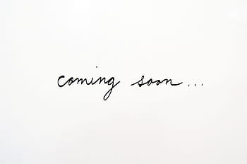

About
ここ数年で私たちは、拡張現実〔Augmented Reality〕にずいぶん親しくなりました。
美人になれるカメラに、街角からモンスターが飛び出すゲーム。このテクノロジーは私たちの日常をもっと楽しく、もっと刺激的に「拡張」してくれます。
思えば、世界中と繋がれるＳＮＳも現実を「拡張」する技術の一つでした。 テクノロジーの進歩は現実の拡張そのものなのかもしれません。
一方、広がりすぎた現実はかえって私たちを窮屈にし、現実のサイズを錯覚させることもあります。
SNS上でふと綴った自分の気持ちが見知らぬ人から批判されるなんて、まるで自分の気持ちさえ他人のためにあるかのようです。
そんな現実を前に、本展は「人情の拡張」をテーマに掲げました。
人情には「情けや思いやり」という意味の他に「人間の自然な心の動き」という意味があります。
今回、展示する作品は全て、気にも留めないコトや慣れ親しんだモノに焦点を当てるものです。
人のための気持ちと自分だけの心の動き、この２種類の「人情」が現実の姿を変えてくれる体験を目指しました。
来場されるみなさまが、よりよい現実の姿を見つけることを心から願っております。
Outline
- 日時
- 2020.1.18 (sat) 13:00-19:00
- 2020.1.19 (sun) 10:00-18:00
- 場所
- amu 東京都渋谷区恵比寿西 1-17-2
- 主催
- 早稲田大学文化構想学部 クリエイティブメディアR&Dゼミ
Works1
-
.jpg) animercy
animercy -
 ドット・フルサト
ドット・フルサト -
 魂の営業マンDJプレイ
魂の営業マンDJプレイ -
 しゅぱむ
しゅぱむ -
 写ルンですが -
(非)日常デザイン.
-
.PNG) Interective Animation
Interective Animation -
オモタミ
-
署名、個性、書跡
-
- -
Works2
-
 あなたは私の夢を見るか
あなたは私の夢を見るか -
宮崎 遥
-
藤原 奏人
-
藤田 彩人
-
冨岡 夏生
-
 プロット投稿サイト
プロット投稿サイト -
 bias-labeled packing
bias-labeled packing -
 Webサイト窓枠解放運動
Webサイト窓枠解放運動 -
須藤 菜々美
-
.jpg) poemeshi
poemeshi -
 神代 真優
神代 真優 -
Emotion sequence
Staff
| 運営マネージャー | 栗本佳歩 / 西大知郎 / 多田夏帆 |
|---|---|
| 会計 | 天野凛 / 高橋二稀 / 上田悠人 |
| 記録 | 宮崎遥 / 山本藍衣 / 高橋二稀 / 藤田彩人 |
| 広報 | 髙谷蓮実 / 河本のぞみ / 神代真優 / 林崎美侑 |
| 展示レイアウト | 小田崇仁 / 米原秀香 / 花井佑佳 / 金廣裕吉 |
| グラフィック | 菅沢若菜 / 島野史子 / 小林未奈 / 宮崎遥 |
| コピーライト | 平田純也 / 須藤菜々美 / 竹田毬恵 / 冨岡夏生 |
| 英訳 | 佐々木杏奈 |
| Webデザイン | 佐久間響子 / 糸井康子 / 宮崎遥 |
| メンバー | 土谷優衣 / 高野瑞季 / 藤原奏人 / 内田佐和 / 吉満駿太郎 / 石田祐暉 |
Access
〒150-0021 東京都渋谷区恵比寿西１丁目１７−２
交通アクセス
JR山手線・埼京線・湘南新宿ライン 恵比寿駅西口 徒歩4分
東京メトロ日比谷線 恵比寿駅4番出口 徒歩2分
HP
Archive

exhibition:grayscale
2018年2月に行われた早稲田大学の文化構想学部表象・メディア論系の草原真知子ゼミとドミニクチェンゼミ、基幹理工学部表現工学科の橋田朋子研究室による合同展示です。

Aging展
2018年12月に行われた早稲田大学の文化構想学部表象・メディア論系のドミニクチェンゼミ、基幹理工学部表現工学科の橋田朋子研究室による合同展示です。